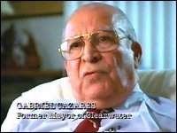
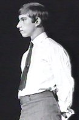

CHAPTER SIX
The Flag Land Base
In August 1975, the Apollo returned to Curaçao. The
Scientologists allege that an Interpol agent had given the report of the 1965 Australian
Enquiry (the Anderson Report) to local newspapers and officials, and that Henry Kissinger
had sent an unfavourable memo to most of the United States embassies in the Caribbean. The
Dutch Prime Minister demanded that the "ship of fools" be ejected from Curaçao.
So in October the Apollo was once again ordered out of port. 1
She sailed to the Bahamas. The crew was divided into
three parties, and Scientology moved its headquarters back to shore, in the United States.
Two groups established management outposts in New York and Washington, DC, and the third,
including Hubbard, flew to Daytona, Florida. Hubbard lectured to a handpicked team of Sea
Org members on his "New Vitality Rundown." 2
The Apollo lay at anchor in the Bahamas.
Maintaining its usual secrecy, the Church of
Scientology started to buy property in Clearwater, Florida. The town's name was obviously
too much of a temptation to Hubbard, and he personally directed the project through his
Guardian' s Office. In October, a front corporation, Southern Land Development and
Leasing, agreed to purchase the 272-room Fort Harrison hotel for $2.3 million. The owners'
attorney said it was one of the strangest transactions he had ever dealt with. He did not
even have Southern Land Development's phone number. 3
In November, Southern Land added the Bank of
Clearwater building to its holdings for $550,000. A spokesman kept up the pretense, by
announcing that the properties had been purchased for the United Churches of Florida. He
pledged openness. No connection to Scientology was mentioned. The residents of Clearwater
had no idea that their town was being systematically invaded. This organization which
promised the world a "road to truth" was still treading its own back alley of
duplicity and subterfuge.
The Guardian's Office was already preparing detailed
reports on Clearwater, and its occupants and "opinion leaders." On November 26,
Hubbard sent a secret order to the three principal officers of the Guardian's Office. It
was called "Program LRH Security. Code Name: Power."
The entire Guardian's Office was put on alert, so that
any hint of government or judicial action concerning Hubbard would be discovered early
enough to spirit him away from potential subpoena or arrest. As Hubbard was staying near
to Clearwater, security there was to be especially tight.
Despite contrary representations to Scientologists and
the world at large, Hubbard was still very much in control of his Church. He said as much
in an order to the head of the U.S. GO, complaining that he was not only having to direct
the entire Church, but also the Guardian's Office. In the same order, Hubbard laid out
strict security arrangements for his own proposed visits to the new Scientology properties
in Clearwater. He explained that he wanted to become a celebrity in the area, as a
photographer, and that his picture of the mayor would soon grace city hall.
GO Program Order 158, "Early Warning
System," issued on December 5th, 1975, instituted Hubbard's orders regarding his
personal security. Distribution of the Order was highly restricted. Security was to be
maintained by placing agents in the Offices of the United States Attorney in Washington
and Los Angeles, the International Operations department of the IRS, the American Medical
Association in Chicago, and several government agencies in Florida. Agents were already in
place in the Coast Guard, the Drug Enforcement Administration, and the IRS in both
Washington and Los Angeles. This was not a matter of a small persecuted religion
infiltrating government agencies to expose immoral actions committed by those agencies. In
reality, it was a matter of protecting Hubbard from any inconvenience, let alone any
litigation. 4
The Guardian's Office was in full swing, especially
its Intelligence section, B-1. On December 5, "Project Power" was issued. Its
purpose was to make United Churches indispensable to the Clearwater community. The
Guardian's Office was to investigate the opponents of community leaders, using a minimum
of illegally obtained information. United Churches would give this information to the
community leader in question, and offer to make further investigations on his or her
behalf. GO Operations would be mounted against such opponents. The example given in the
Guardian's Order concerned a fictitious child molester called Mr. Schultz. Having obtained
the mayor's permission to see what might be done to enhance the local park, outraged
officials of United Churches would catch Mr. Schultz in the act. A GO Operation would then
ruin Schultz completely.
There was also an instruction to do a complete survey
of the county to determine who was hostile to Scientology. There were to be dossiers on
medical societies, clinics, hospitals, police departments, public relations agencies, drug
firms, federal, state and local government agencies, the city council, banks, investment
houses, Congressional representatives and Florida's two senators.
As part of his new image, Hubbard directed a radio
show for United Churches. Amazingly, no-one seemed to realize that United Churches was a
front for Scientology. Hubbard bustled around wearing a tam-o'-shanter and a khaki uniform.
Reverend Wicker, of the Calvary Temple of God, later said, "They introduced him to me
as Mr. Hubbard, but that didn't mean anything to me - they said he was an engineer ....
When I saw his picture in the paper, I felt like an idiot." 5
 The plans to win favor with the mayor of
Clearwater did not materialize. Before Mr. Schultz could be caught molesting little girls
in the park, Mayor Gabriel Cazares (right) started asking questions. He made a
public statement: "I am discomfited by the increasing visibility of security
personnel, armed with billy clubs and Mace, employed by the United Churches of Florida
.... I am unable to understand why this degree of security is required by a religious
organization."
Cazares was added to the Enemies list. He was followed
onto it by a journalist at the Clearwater Sun, who ran a story saying that the
check paying for the Fort Harrison Hotel had been drawn on a Luxembourg bank. A day later
the Guardian's Office put into effect a plan to destroy the career of journalist Bette
Orsini of the St. Petersburg Times. She was closing in on the truth about the
United Churches of Florida. 6
The Scientologists actually managed to pre-empt
Orsini's story by a matter of hours. On January 28, 1976, a spokesman announced that the
purchasers of the Fort Harrison Hotel and the Bank of Clearwater building were none other
than the Church of Scientology of California. He reassured local people that although half
of the mysterious new occupants of the buildings were Scientologists, United Churches
would not be used to convert people to Scientology. On the same day, June Phillips (aka
Byrne), joined the staff of the Clearwater Sun. Although the Sun paid
her salary, she filed daily reports with the Guardian's Office.
The next day, the Scientology spokesman said that if
United Churches was not successful in its mission to bring harmony to the religious
community (!), then the Fort Harrison Hotel would become a center for advanced Scientology
studies. Then he made a series of allegations about the mayor, saying his
"attack" was motivated by personal profit.
Clearwater was the site for the new "Flag,"
the "Flag Land Base." Even before the buildings had been occupied, a new
American Land Base had been promoted to Scientologists throughout the world. United
Churches was just another shore story. Suddenly the town was swamped with youths in sailor
suits, and a new kind of tourist with a fixed stare.
The Hubbards and their retinue had moved into a block
of apartments called King Arthur's Court, in Dunedin, about five miles north of
Clearwater. 7 Hubbard
decided to buy some new outfits. He did not follow his usual procedure, ordering the
clothes from England via his personal secretary at Saint Hill. Instead he saw a local
tailor, who turned out to be a great fan of Hubbard's science fiction, and promptly
boasted about his meeting with the famous author. The newspapers soon followed the
tailor's lead.
Hubbard was very shy of publicity by this time,
perhaps because of his increasingly poor health and appearance. The superman revered by
Scientologists could not be seen to be a grossly overweight chainsmoker, with a large
pointed lump on his forehead. Worse yet, Hubbard was afraid he would be subpoenaed to
appear in one of the many court cases involving Scientology. Taking only three devoted Sea
Org members with him, Hubbard fled Dunedin. His photo-portrait of the mayor of Clearwater
never did hang in City Hall. 8
Hubbard had continued to direct the Guardian's Office,
including the attack on Mayor Gabe Cazares. He personally ordered that Cazares' school
records be obtained, perhaps believing that everyone lies about their academic
qualifications.
In February 1976, the Guardian's Office in Clearwater
was a hive of activity. The St. Petersburg Times was threatened with a libel
suit. Cazares was more than threatened: A million dollar suit was filed against him for
libel, slander and violation of civil rights. As Hubbard had said in the 1950s, "The
purpose of the suit is to harass and discourage rather than to win .... The law can be
used very easily to harass." 9
Scientologists went to Alpine, Texas, and pored over records concerning the Cazares family
at the county clerk's office, the police department, the office of the Border Patrol, and
the local Roman Catholic church. They talked with doctors, long-term residents, even the
midwife who had delivered Gabe Cazares. The Cazares' headstones in the graveyard were
checked. The GO decided that the Gabriel Cazares who had been born in Alpine, Texas, could
not possibly be their man. Obviously the accounts did not accord with their image of a
Suppressive enemy of Scientology.
A GO official assured his seniors that a handling of
the Clearwater Chamber of Commerce was also underway (a Scientology agent had already
joined). A Scientologist had applied for a job at the St. Petersburg Times. A
dossier had been prepared on the Clearwater City Attorney, and data collections had been
made on three reporters perceived to be enemies.
A radio announcer who had been making broadcasts
unfavorable to Scientology was fired after threat of legal action. He was rehired only
after promising not to discuss Scientology on his program.
These actions were bound to provoke some response. The
Guardian's Office probably did not realize that their "enemies" would fight fire
with fire. The St. Petersburg Times filed suit, charging that Hubbard and the
Scientologists had conspired to "harass, intimidate, frighten, prosecute, slander,
defame" Times employees. They sought an injunction against further
harassment.
Gabe Cazares filed an $8 million suit. He alleged that
the Scientologists were attempting to intimidate him and prevent him from doing his job.
February had been a very busy month. As we shall see in the next chapter, 1976 proved to
be a very busy year.
 In October, Hubbard suffered a tragic blow.
Back in 1959 his son Nibs had left Scientology. From that time, Hubbard had pinned his
dynastic dream upon Quentin (right), his oldest son by Mary Sue. He had
frequently announced that Quentin would succeed him as the leader of Scientology. At the
end of October 1976, Quentin was found, comatose, in a parked car in Las Vegas with the
engine still running. Quentin was rushed to a hospital where he died two weeks later,
without regaining consciousness. He was not identified until several days after his death.
Although no precise cause of death was determined, Quentin had certainly suffered from
carbon monoxide poisoning. He was twenty-two years old. 10
Quentin had tried to measure up to his father's
expectations - he was one of the few top-grade Class Twelve Auditors - but he did not
share his father's temperament. By all accounts he was far too gentle to govern
Scientology, or indeed to govern anything. All he wanted was to fly airplanes, and he
often pleaded with his father to allow him to leave the Sea Org and do just that. He had
disappeared several times in an attempt to escape. There was also an aspect of his nature
which could never be reconciled with his father's philosophy: Quentin was a homosexual.
There is little doubt that his death was self-inflicted, as he had attempted suicide
before. 11
Mary Sue broke down and wailed when she heard the
news. She later tried to persuade friends that her son had died from encephalitis.
Quentin's father's response was cold-blooded, he was furious that his son had let him
down. There was an immediate cover-up. Documents were stolen from the coroner's office and
taken to Hubbard. In accordance with Hubbard's policy regarding bad news, Scientologists
were not told about Quentin's death. Some who found out were told he had been murdered.
In hiding in Washington, Hubbard busied himself trying
to discover the secrets of the Soldiers of Light and the Soldiers of Darkness. He
thoroughly agreed with the old gnostic belief that we are all born belonging firmly to one
band or the other.
FOOTNOTES
Additional sources:
Documents referred to in text
1. Playing Dirty,
p.86
2. Technical Volumes of
Dianetics & Scientology vol. 11, p. 236
3. St. Petersburg Times,
"Scientology," pp. 7, 2 & 27; Armstrong affidavit, March 1986, p.50.
4. GO Program Order 158; Mary
Sue Hubbard Stipulation, pp.90f
5. St. Petersburg Times,
"Scientology," p. 8
6. Clearwater Sun, 4
November 1979; St. Petersburg Times, "Scientology"
7. Terri Gamboa in vol. 24 of
transcript of Church of Scientology of California vs. Gerald Armstrong, Superior
Court for the County of Los Angeles, case no. C 420153, p.4238
8. Interview with witness
9. Technical Volumes
of Dianetics & Scientology vol. 2, p. 157
10. Miller interview with
Kima Douglas; coroner's reports
11. Interview with Frank
Gerbode, Woodside, California, October 1986 |